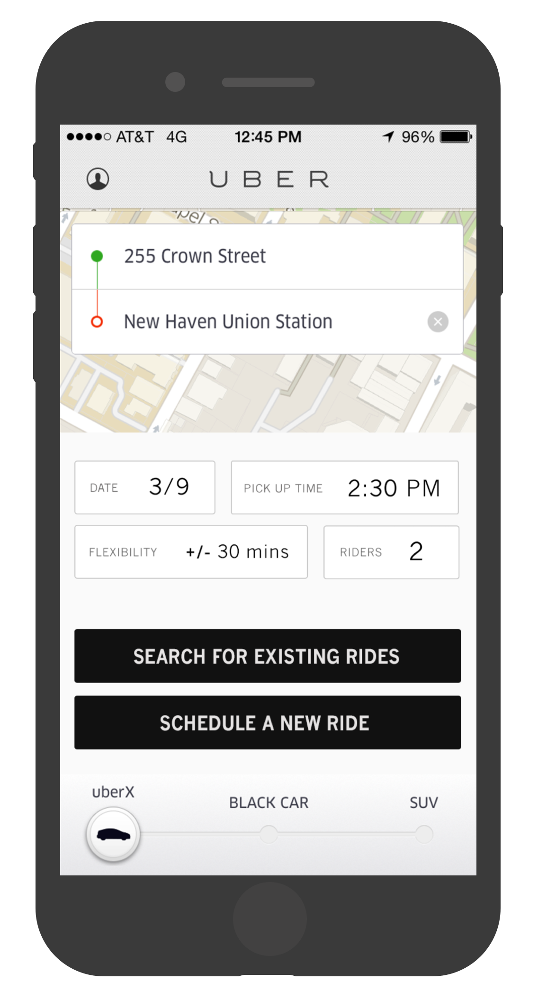

Troll Trump 10/12/2016
While at Hillary for America, I managed the design, development, and public rollout of Troll Trump, a fundraising site that let users create an automatic donation to Hillary's campaign each time Trump posted on Twitter. The site raised $250,000 in three weeks.
Built with: React, Nuclear JS / Flux, DynamoDB, Amazon SQS, Stripe
Press: CNN Money, Mashable, GOOD, USNews, DailyDot, CNet, Adweek


hillaryclinton.com/donate 1/16 - 10/16
I led optimization and feature development for the Clinton campaign’s online donation platform. We ran
dozens of multivariate experiments to maximize revenue, testing everything from small visual tweaks to large functional redesigns.
This data-first approach let us understand how donor behavior differs across traffic sources and
kept our allocation of development time closely tied to the product’s key success metrics.
Our team also invested heavily in performance, eventually scrapping our isomorphic React / Flux stack
in favor of a custom vanilla JS framework built in-house.
The platform we built raised money from over 3 million individual donors,
grew a pool of 1.2 million account holders with saved payment info, and raised hundreds of millions of dollars.
Built with: React, Nuclear JS / Flux, Django, Stripe

Zipper, an SMS fundraising tool 8/1/2016
At Hillary for America, we grew a robust SMS program that the campaign used for GOTV, volunteer recruitment, fundraising, and much more.
My team built a backend service and data pipeline to let users donate to the campaign by just texting a dollar amount. This
development and success of this product was the result of broad collaboration across the fundraising, legal, and digital organizing teams.
The feature was available to the 1.2 million users with saved payment information on hillaryclinton.com.
When a user completed a donation on our web flow, we asked if they wanted to save their payment info and join our SMS program. This
allowed us to securely link a phone number on our SMS list to an account on our website and a payment token with Stripe. During key
fundraising moments, we could text this eligible audience and prompt them to donate immediately.
We ran several tests to optimize the wording and timing of these SMS "quick donate" asks. This feature alone raised over $1.5 million
dollars in the last stretch of the campaign.


Uber Trek 1/21/2015
As a product case study, I came up with a new product for Uber that allows users to schedule rides in advance. I describe why the product makes sense, outline how it should work and look, and discuss what it could mean for Uber.
Built with: Photoshop, imagination
View the project: Uber Trek
3Derm 11/15/2014
3Derm is a Boston-based startup dedicated to improving the detection skin cancer in its earliest stages. The company uses a custom-built 3D imaging device for easy and affordable screening. I helped design and build the front-end of an online portal for patients and doctors.
Built with: MongoDB, Node JS, Angular JS, Boostrap, SASS
View the project: 3derm.com
Drawings of Humans
Humans of New York catalogues the stories of the inhabitants of New York City. I scrape humansofnewyork.com each day and pair a randomly chosen quote with a blank canvas to let you draw the story as you see fit. Submissions are compiled with email and If This Then That.
Built with: HTML5 Canvas, IFTT, Humans of New York
View the project: Drawings of Humans
View submissions: drawings-of-humans.tumblr.com